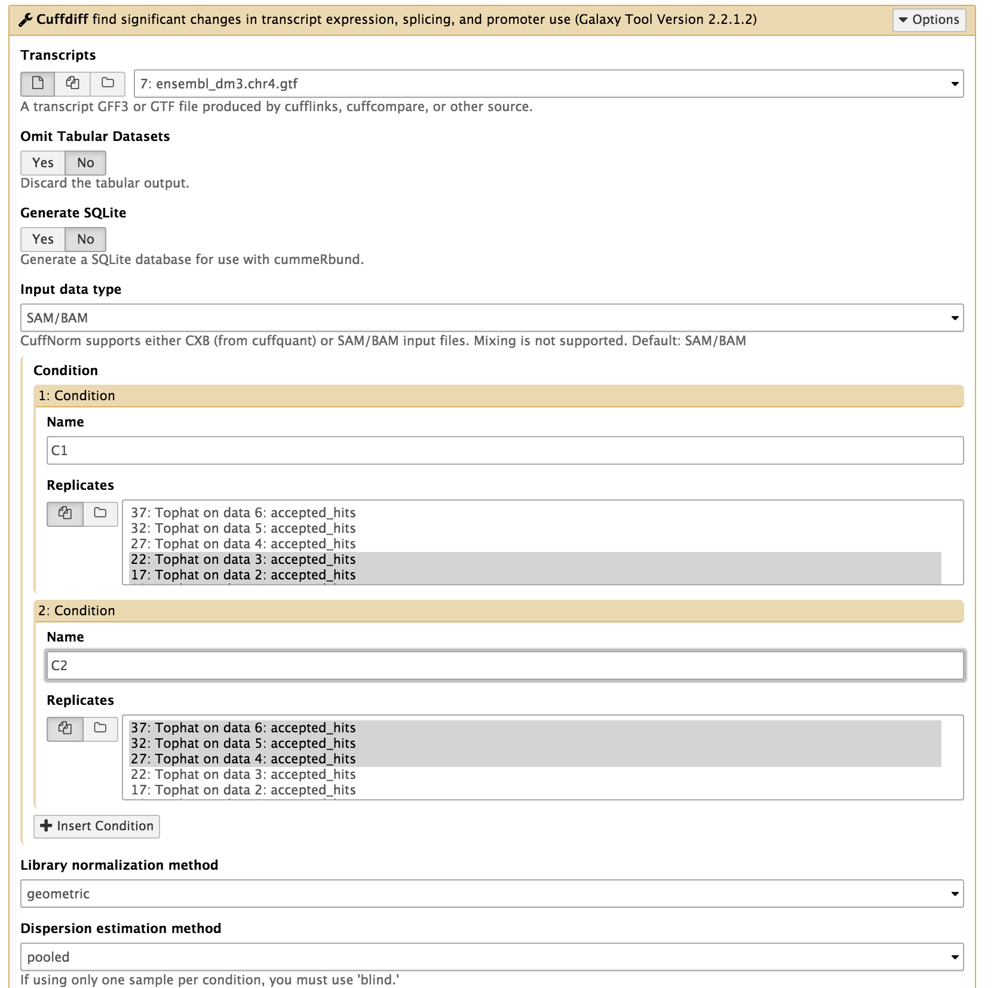

RNA-Seq Differential Gene Expression: Basic Tutorial¶
Authors: Mahtab Mirmomeni, Andrew Lonie, Jessica Chung
Tutorial Overview¶
In this tutorial we cover the concepts of RNA-seq differential gene expression (DGE) analysis using a small synthetic dataset from the model organism, Drosophila melanogaster.
The tutorial is designed to introduce the tools, datatypes and workflow of an RNA-seq DGE analysis. In practice, real datasets would be much larger and would contain sequencing and alignment errors that make analysis more difficult.
Our input data for this tutorial will be raw RNA-seq reads from two experimental conditions and we will output a list of differentially expressed genes identified to be statistically significant.
In this tutorial we will:
- introduce the types of files typically used in RNA-seq analysis
- align RNA-seq reads with Tophat
- visualise RNA-seq alignment data with IGV
- find differentially expressed genes with Cuffdiff
- understand the importance of replicates for differential expression analysis
This tutorial does not cover the following steps that you would do in a real RNA-seq DGE analysis:
- QC (quality control) of the raw sequence data
- Trimming the reads for quality and for adaptor sequences
- QC of the RNA-seq alignment data
These steps have been omitted because the data we use in this tutorial is synthetic and has no quality issues, unlike real data.
Learning Objectives¶
At the end of this tutorial you should:
- Be familiar with the Tuxedo Protocol workflow for RNA-seq differential expression analysis
- Be able to process raw RNA sequence data into a list of differentially expressed genes
- Be aware of how the relationship between the number of biological replicates in an experiment and the statistical power available to detect differentially expressed genes
Background¶
Where does the data in this tutorial come from?¶
The data for this tutorial is from an RNA-seq experiment looking for differentially expressed genes in D. melanogaster (fruit fly) between two experimental conditions. The experiment and analysis protocol we will follow is derived from a paper in Nature Protocols by the research group responsible for one of the most widely used set of RNA-seq analysis tools: “Differential gene and transcript expression analysis of RNA-seq experiments with TopHat and Cufflinks” (Trapnell et al 2012).
The sequence datasets are single-end Illumina synthetic short reads, filtered to only include chromosome 4 to facilitate faster mapping (which would otherwise take hours). We’ll use data from three biological replicates from each of the two experimental conditions.
The Tuxedo Protocol¶
The workflow this tutorial is based on is the Tuxedo Protocol. Reads are first mapped with TopHat and a transcriptome is then assembled using Cufflinks. Cuffdiff then quantifies the expression in each condition, and tests for differential expression.
In this tutorial we use a simpler protocol as the D. melanogaster transcriptome is already very well characterised.
More information about the Tuxedo protocol can be found here.
Section 1: Preparation [15 min]¶
1. Register as a new user in Galaxy if you don’t already have an account (what is Galaxy?)¶
- Open a browser and go to a Galaxy server. This can either be your
personal GVL server you started previously,
the public Galaxy Tutorial server
or the public Galaxy Australia.
Recommended browsers include Firefox and Chrome. Internet Explorer is not supported. - Register as a new user by clicking User > Register on the top dark-grey bar. Alternatively, if you already have an account, login by clicking User > Login.
2. Import the RNA-seq data for the workshop.¶
If you are using the public Galaxy Tutorial server or Galaxy Melbourne server, you can import the data directly from Galaxy. You can do this by going to Shared Data > Published Histories on the top toolbar, and selecting the history called RNA-Seq_Basic_Sec_1. Then click on “Import History” on the top right and “start using this history” to switch to the newly imported history.
Alternatively, if you are using your own personal Galaxy server, you can import the data by:
- In the tool panel located on the left, under Basic Tools select Get Data > Upload File. Click on the Paste/Fetch data button on the bottom section of the pop-up window.
- Upload the sequence data by pasting the following links into the text
input area:
https://swift.rc.nectar.org.au:8888/v1/AUTH_a3929895f9e94089ad042c9900e1ee82/RNAseqDGE_BASIC/C1_R1.chr4.fqSelect the type as ‘fastqsanger’ and press start to upload the files to Galaxy.
https://swift.rc.nectar.org.au:8888/v1/AUTH_a3929895f9e94089ad042c9900e1ee82/RNAseqDGE_BASIC/C1_R2.chr4.fq
https://swift.rc.nectar.org.au:8888/v1/AUTH_a3929895f9e94089ad042c9900e1ee82/RNAseqDGE_BASIC/C1_R3.chr4.fq
https://swift.rc.nectar.org.au:8888/v1/AUTH_a3929895f9e94089ad042c9900e1ee82/RNAseqDGE_BASIC/C2_R1.chr4.fq
https://swift.rc.nectar.org.au:8888/v1/AUTH_a3929895f9e94089ad042c9900e1ee82/RNAseqDGE_BASIC/C2_R2.chr4.fq
https://swift.rc.nectar.org.au:8888/v1/AUTH_a3929895f9e94089ad042c9900e1ee82/RNAseqDGE_BASIC/C2_R3.chr4.fq
- Upload the annotated gene list reference by pasting the following link into the text input area: You don’t need to specify the type for this file as Galaxy will auto-detect the file as a GTF file.
3. View and have an understanding of the files involved in RNA-seq analysis.¶
-
You should now have the following files in your Galaxy history:
6 files containing single-ended reads:
- C1_R1.chr4.fq
- C1_R2.chr4.fq
- C1_R3.chr4.fq
- C2_R1.chr4.fq
- C2_R2.chr4.fq
- C2_R3.chr4.fq
And 1 gene annotation file:
- ensembl_dm3.chr4.gtf
These files can be renamed by clicking the pen icon if you wish.
-
These 6 sequencing files are in FASTQ format and have the file extension: .fq. If you are not familiar with the FASTQ format, click here for an overview.
Click on the eye icon to the top right of each FASTQ file to view the first part of the file. The first 3 files are from the first condition (C1) and has 3 replicates labelled R1, R2, and R3. The next 3 FASTQ files are from the second condition (C2) and has 3 replicates labelled R1, R2, and R3.
In this tutorial, we aim to find genes which are differentially expressed between condition C1 and condition C2.
-
The gene annotation file is in GTF format. This file describes where the genes are located in the Drosophila reference genome. We will examine this file more closely later in Section 3 of this tutorial.
NOTE: Since the reads in this dataset are synthetic, they do not have
real quality scores.
NOTE: If you log out of Galaxy and log back at a later time your data
and results from previous experiments will be available in the right panel
of your screen called the ‘History’
Section 2: Align reads with Tophat [30 mins]¶
In this section we map the reads in our FASTQ files to a reference genome. As these reads originate from mRNA, we expect some of them will cross exon/intron boundaries when we align them to the reference genome. Tophat is a splice-aware mapper for RNA-seq reads that is based on Bowtie. It uses the mapping results from Bowtie to identify splice junctions between exons. More information on Tophat can be found here.
1. Align the RNA-seq short reads to a reference genome.¶
In the left tool panel menu, under NGS Analysis, select NGS: RNA Analysis > Tophat and set the parameters as follows:
- Is this single-end or paired-end data? Single-end
- RNA-Seq FASTQ file:
(Click on the multiple datasets icon and select all six of the FASTQ files. This can be done by holding down the shift key to select a range of files, or holding down the ctrl key (Windows) or command key (OSX) and clicking to select multiple files.)- C1_R1.chr4.fq
- C1_R2.chr4.fq
- C1_R3.chr4.fq
- C2_R1.chr4.fq
- C2_R2.chr4.fq
- C2_R3.chr4.fq
- Use a built in reference genome or own from your history: Use built-in genome
- Select a reference genome: D. melanogaster Apr. 2006 (BDGP R5/dm3) (dm3)
- Use defaults for the other fields
- Execute
Note: This may take a few minutes, depending on how busy the server is.
2. Examine the output files¶
You should have 5 output files for each of the FASTQ input files:
- Tophat on data 1: accepted_hits: This is a BAM file containing sequence alignment data of the reads. This file contains the location of where the reads mapped to in the reference genome. We will examine this file more closely in the next step.
- Tophat on data 1: splice junctions: This file lists all the places where Tophat had to split a read into two pieces to span an exon junction.
- Tophat on data 1: deletions and Tophat on data 1: insertions: These files list small insertions or deletions found in the reads. Since we are working with synthetic reads we can ignore Tophat for Illumina data 1:insertions Tophat for Illumina data 1:deletions for now.
- Tophat on data 1: align_summary: This file gives some mapping statistics including the number of reads mapped and the mapping rate.
You should have a total of 30 Tophat output files in your history.
3. Visualise the aligned reads with IGV¶
The purpose of this step is to :
- visualise the quantitative, exon-based nature of RNA-seq data
- visualise the expression differences between samples represented by the quantity of reads, and
- become familiar with the Integrative Genomics Viewer (IGV)– an interactive visualisation tool by the Broad Institute.
To visualise the alignment data:
- Click on one of the Tophat accepted hits files, for example ‘Tophat on data 1: accepted_hits’.
- Click on Display with IGV ‘webcurrent’ (or ‘local’ if you have IGV installed on your computer. You will need to open IGV before you click on ‘local’). This should download a .jnlp Java Web Start file to your computer. Open this file to run IGV. (You will need Java installed on your computer to run IGV)
- Once IGV opens, it will show you the accepted_hits BAM file. (Note: this may take a bit of time as the data is downloaded to IGV)
- Select chr4 from the second drop box under the toolbar. Zoom in to view alignments of reads to the reference genome. You should see the characteristic distribution of RNA-seq reads across the exons of the genes, with some gaps at intron/exon boundaries. The number of reads aligned to a particular gene is proportional to the abundance of the RNA derived from that gene in the sequenced sample. (Note that IGV already has a list of known genes of most major organisms including Drosophila, which is why you can see the genes in the bottom panel of IGV.)
- View one of the splice function files such as ‘TopHat on data 1: splice
junctions’. You will need to save this file to your local disk
using the disk icon under the details of the file. Then open
the saved .bed file directly in IGV using the File > Load From File
option from IGV. This is because IGV doesn’t automatically stream BED
files from Galaxy.
The junctions file is loaded at the bottom of the IGV window and splicing events are represented as coloured arcs. The height and thickness of the arcs are proportional to the read depth. -
View differentially expressed genes by viewing two alignment files simultaneously. The aim of this tutorial is to statistically test differential expression, but first it’s useful to reassure ourselves that the data looks right at this stage by comparing the aligned reads for condition 1 (C1) and condition 2 (C2).
Select ‘TopHat on data 4: accepted_hits’ (this is the accepted hits alignment file from first replicate of condition C2) and click on ‘display with IGV local’. This time we are using the ‘local’ link, as we already have an IGV window up and running locally from the last step. One the file has loaded, change the location to chr4:325197-341887 using the field on the top toolbar.
The middle gene in this area clearly looks like it has many more reads mapped in condition 2 than condition 1, whereas for the surrounding genes the reads look about the same. The middle gene looks like it is differentially expressed. But, of course, it may be that there are many more reads in the readsets for C1 and C2, and the other genes are underexpressed in condition 2. So we need to statistically normalise the read counts before we can say anything definitive, which we will do in the next section.
4. [Optional] Visualise the aligned reads in Trackster¶
We can also use the inbuilt Galaxy genome browser, Trackster, to visualise alignments. Trackster has fewer features than IGV, but sometimes it may be more convenient to use as it only requires the browser.
- On the top bar of Galaxy, select Visualization > New Track Browser.
- Name your new visualization and select D. melanogaster (dm3) as the reference genome build.
- Click the Add Datasets to Visualization button and select Tophat on data 1: accepted_hits and Tophat on data 4: accepted_hits by using the checkboxes on the left.
- Select chr4 from the dropdown box. You can zoom in and out using the buttons on the top toolbar. You can also add more tracks using the Add Tracks icon located on the top right.
- Next to the drop down list, click on the chromosomal position number display and specify the location chr4:325197-341887.
Before starting the next section, leave the Trackster interface and return to the analysis view of Galaxy by clicking ‘Analyze Data’ on the top Galaxy toolbar.
Section 3: Test differential expression with Cuffdiff [45 min]¶
The aim in this section is to:
- generate tables of normalised read counts per gene per condition based on the annotated reference transcriptome,
- statistically test for expression differences in normalised read counts for each gene, taking into account the variance observed between samples,
- for each gene, calculate the p-value of the gene being differentially expressed– this is the probability of seeing the data or something more extreme given the null hypothesis (that the gene is not differentially expressed between the two conditions),
- for each gene, estimate the fold change in expression between the two conditions.
All these steps are rolled up into a single tool in Galaxy: Cuffdiff. Cuffdiff is part of the Cufflinks software suite which takes the aligned reads from Tophat and generates normalised read counts and a list of differentially expressed genes based on a reference transcriptome - in this case, the curated Ensembl list of D. melanogaster genes from chromosome 4 that we supply as a GTF (Gene Transfer Format) file. A more detailed explanation of Cufflinks DGE testing can be found here.
1. Examine the reference transcriptome¶
Click on the eye icon to display the ensembl_dm3.chr4.gtf reference transcriptome file in Galaxy.
The reference transcriptome is essentially a list of chromosomal features
which together define genes. Each feature is in turn defined by a
chromosomal start and end point, feature type (CDS, gene, exon etc),
and parent gene and transcript. Importantly, a gene may have many features,
but one feature will belong to only one gene.
More information on the GTF format can be found
here.
The ensembl_dm3.chr4.gtf file contains ~4900 features which together define
the 92 known genes on chromosome 4 of Drosophila melanogaster. Cuffdiff
uses the reference transcriptome to aggregate read counts per gene,
transcript, transcription start site and coding sequence (CDS). For this
tutorial, we’ll only consider differential gene testing, but it is also
possible to test for differential expression of transcripts or
transcription start sites.
2. Run Cuffdiff to identify differentially expressed genes and transcripts¶
In the left tool panel menu, under NGS Analysis, select NGS: RNA Analysis > Cuffdiff and set the parameters as follows:
- Transcripts: ensembl_dm3.chr4.gtf
- Condition:
- 1: Condition
- name: C1
- Replicates:
- Tophat on data 1: accepted_hits
- Tophat on data 2: accepted_hits
- Tophat on data 3: accepted_hits
(Multiple datasets can be selected by holding down the shift key or the ctrl key for Windows or the command key for OSX.)
- 2: Condition
- name: C2
- Replicates:
- Tophat on data 4: accepted_hits
- Tophat on data 5: accepted_hits
- Tophat on data 6: accepted_hits
- 1: Condition
- Use defaults for the other fields
- Execute

3. Explore the Cuffdiff output files¶
There should be 11 output files from Cuffdiff. These files should all begin with something like “Cuffdiff on data 37, data 32, and others”.
FPKM tracking files:
- transcript FPKM tracking
- gene FPKM tracking
- TSS groups FPKM tracking
- CDS FPKM tracking
These 4 files contain the FPKM (a unit of normalised expression taking into account the transcript length for each transcript and the library size of the sample) for each of the two conditions.
Differential expression testing files:
- gene differential expression testing
- transcript differential expression testing
- TSS groups differential expression testing
- CDS FPKM differential expression testing
- CDS overloading diffential expression testing
- promoters differential expression testing
- splicing differential expression testing
These 7 files contain the statistical results from testing the level of expression between condition C1 and condition C2.
-
Examine the tables of normalised gene counts View the Cuffdiff file “Cuffdiff on data x, data x, and others: gene FPKM tracking” by clicking on the eye icon. The file consists of one row for each gene from the reference transcriptome, with columns containing the normalised read counts for each of the two conditions. Note:
- Cuffdiff gives each gene it’s own ‘tracking_id’, which equates to a gene. Multiple transcription start sites are aggregated under a single tracking_id.
- A gene encompasses a chromosomal locus which covers all the features that make up that gene (exons, introns, 5’ UTR, etc).
-
Inspect the gene differential expression testing file View the Cuffdiff file “Cuffdiff on data x, data x, and others: gene differential expression testing” by clicking on the eye icon. The columns of interest are: gene (c3), locus (c4), log2(fold_change) (c10), p_value (c12), q_value (c13) and significant (c14).
-
Filter based on column 14 (‘significant’) - a binary assessment of q_value > 0.05, where q_value is p_value adjusted for multiple testing. Under Basic Tools, click on Filter and Sort > Filter:
- Filter: “Cuffdiff on data....: gene differential expression testing”
- With following condition: c14==’yes’
- Execute
This will keep only those entries that Cuffdiff has marked as significantly differentially expressed.
We can rename this file (screenshot) by clicking on the pencil icon of the outputted file and change the name from “Filter on data x” to “Significant_DE_Genes”. -
Examine the sorted list of differentially expressed genes. Click on the eye icon next to “Significant_DE_Genes” to view the data.
How many genes are in the Significant_DE_Genes file? What are their names?
Two genes have been identified as differentially expressed between conditions C1 and C2:
- Ank located at chr4:137014-150378, and
- CG2177 located at chr4:331557-334534
“CG2177” located at chr4:331557-334534 was the gene that we intuitively (with IGV) saw to be differentially expressed in the previous section, in the broader region of chr4:325197-341887.
Section 4. Repeat without replicates [20 min]¶
In this section, we will run Cuffdiff with fewer replicates.
Stop and think:
Why do we need replicates for an RNA-seq differential gene expression experiment? What do you expect to happen if we only use one sample from each condition for our analysis?-
Repeat the differential gene expression testing from section 2, but this time only use one replicate from each condition group (C1 and C2).
From the Galaxy tool panel, select NGS: RNA Analysis > Cuffdiff and set the parameters as follows:- Transcripts: ensembl_dm3.chr4.gtf
- Condition:
- 1: Condition
- name: C1
- Replicates: Tophat on data 1: accepted_hits
- 2: Condition
- name: C2
- Replicates: Tophat on data 4: accepted_hits
- 1: Condition
- Library normalization method: classic-fpkm
- Dispersion estimation method: blind
- Use defaults for the other fields
- Execute
-
Filter the recently generated gene set for significantly differentially expressed genes by going to Filter and Sort > Filter:
- Filter: “Cuffdiff on data....: gene differential expression testing”
- With following condition: c14==’yes’
- Execute
Rename the output file to something meaningful like “Significant_DE_Genes_C1_R1_vs_C2_R1”
-
Click on the eye icon of Significant_DE_Genes_C1_R1_vs_C2_R1.
You should get no differentially expressed genes at statistical significance of 0.05. The “Ank” gene and the “CG1277”, which were found to be significantly differentially expressed in our first analysis, are not identified as differentially expressed when we only use one sample for each condition. -
Repeat this no-replicates analysis, but this time specify a different set of samples. From the Galaxy tool panel, select NGS: RNA Analysis > Cuffdiff and set the parameters as follows:
- Transcripts: ensembl_dm3.chr4.gtf
- Condition:
- 1: Condition
- name: C1
- Replicates: Tophat on data 1: accepted_hits
- 2: Condition
- name: C2
- Replicates: Tophat on data 5: accepted_hits
- 1: Condition
- Library normalization method: classic-fpkm
- Dispersion estimation method: blind
- Use defaults for the other fields
- Execute
-
Filter the recently generated gene set for significantly differentially expressed genes by going to Filter and Sort > Filter:
- Filter: “Cuffdiff on data....: gene differential expression testing”
- With following condition: c14==’yes’
- Execute
Rename the output file to something meaningful like “Significant_DE_Genes_C1_R1_vs_C2_R2”
-
Click on the eye icon of Significant_DE_Genes_C1_R1_vs_C2_R2.
We now see “CG2177” appear again in the list as significantly differentially expressed, but not “Ank”.
How can we interpret the difference in results from using different replicates?
There is a larger absolute difference in CG1277 expression between samples 1 (C1_R1) and 5 (C2_R2) than samples 1 (C1_R1) and 4 (C2_R1), hence Cuffdiff identifies CG1277 as differentially expressed between C1_R1 and C2_R2, but not between C1_R1 and C2_R1.
On the other hand, differences in level of expression of Ank is much smaller between samples, so we need to see it consistently across multiple replicates for Cuffdiff to be confident it actually exists. One replicate is not enough.
The identification of differentially expressed genes is based on the size of the difference in expression and the variance observed across multiple replicates. This demonstrates how important it is to have biological replicates in differential gene expression experiments.
If we say that genes Ank and CG2177 are truly differentially expressed, we can call these instances where the true differentially expressed genes are not identified as false negatives. Generally, increasing replicates decreases the number of false negatives.
It is also more likely to see more false positives when using an insufficient number of replicates. False positives can be defined as identifiying a gene as differentially expressed when it is, in reality, not.
[Optional step]
Repeat this analysis, specifying groups of two replicates each. What do you
get? How many replicates do we need to identify Ank as differentially
expressed?
Section 5. Optional Extension [20 min]¶
Extension on the Tuxedo Protocol¶
The full Tuxedo protocol includes other tools such as Cufflinks, Cuffmerge, and CummeRbund. Cufflinks and Cuffmerge can build a new reference transcriptome by identifying novel transcripts and genes in the RNA-seq dataset - i.e. using these tools will allow you to identify new genes and transcripts, and then analyse them for differential expression. This is critical for organisms in which the transcriptome is not well characterised. CummeRbund helps visualise the data produced from the Cuffdiff using the R statistical programming language.
Read more on the full Tuxedo protocol here.
If the organism we were working on did not have a well characterized reference transcriptome, we would run Cufflinks and Cuffmerge to create a transcriptome.
-
Suppose we didn’t have our Drosophila GTF file containing the location of known genes. We can use Cufflinks to assemble transcripts from the alignment data to create GTF files. From the Galaxy tool panel, select NGS: RNA Analysis > Cufflinks and set the parameters as follows:
- SAM or BAM file of aligned RNA-Seq reads:
Click on the multiple datasets icon and select all 6 BAM files from Tophat - Max Intron Length: 50000
- Use defaults for the other fields
- Execute
- SAM or BAM file of aligned RNA-Seq reads:
-
Next, we want to merge the assemblies outputted by Cufflinks by selecting NGS: RNA Analysis > Cuffmerge and setting the parameters as follows:
- GTF file(s) produced by Cufflinks: Select the 6 GTF files ending with ‘assembled transcripts’ produced by Cufflinks. Use the ctrl key or command key to select multiple files.
- Use defaults for the other fields
- Execute
Note: In cases where you have a reference GTF, but also want to identify novel transcripts with Cufflinks, you would add the reference GTF to the cuffmerge inputs with the Additional GTF Inputs (Lists) parameter.
-
View the Cuffmerge GTF file by clicking the eye icon
-
Run Cuffdiff using the new GTF file In the Galaxy tool panel menu, under NGS Analysis, select NGS: RNA Analysis > Cuffdiff and set the parameters as follows:
- Transcripts: Cuffmerge on data x, data x, and others: merged transcripts
- Condition:
- 1: Condition
- name: C1
- Replicates:
- Tophat on data 1: accepted_hits
- Tophat on data 2: accepted_hits
- Tophat on data 3: accepted_hits
- 2: Condition
- name: C2
- Replicates:
- Tophat on data 4: accepted_hits
- Tophat on data 5: accepted_hits
- Tophat on data 6: accepted_hits
- 1: Condition
- Use defaults for the other fields
- Execute
-
Filter the recently generated gene set for significantly differentially expressed genes by going to Filter and Sort > Filter:
- Filter: “Cuffdiff on data....: gene differential expression testing”
- With following condition: c14==’yes’
- Execute
Rename the output file to something meaningful like “Significant_DE_Genes_using_Cufflinks_Assembly”
Viewing the significant genes, we see that there are two genes that are identified as differentially expressed by Cuffdiff using the GTF file produced from Cufflinks and Cuffmerge. The locations of these two genes correspond to the previous result from section 3 (genes Ank and CG2177).
Transcript-level differential expression¶
One can think of a scenario in an experiment aiming to investigate the differences between two experimental conditions, where a gene had the same number of read counts in the two conditions but these read counts were derived from different transcripts; this gene would not be identified in a differential gene expression test, but would be in a differential transcript expression test. The choice of what “unit of aggregation” to use in differential expression testing is one that should be made by the biological investigator, and will affect the bioinformatics analysis done (and probably the data generation too).
Take a look at the different differential expression files produced by Cuffdiff from section 3 which use different units of aggregation.
References¶
Trapnell C, Roberts A, Pachter L, et al. Differential gene and transcript expression analysis of RNA-seq experiments with TopHat and Cufflinks. Nature Protocols [serial online]. March 1, 2012;7(3):562-578.